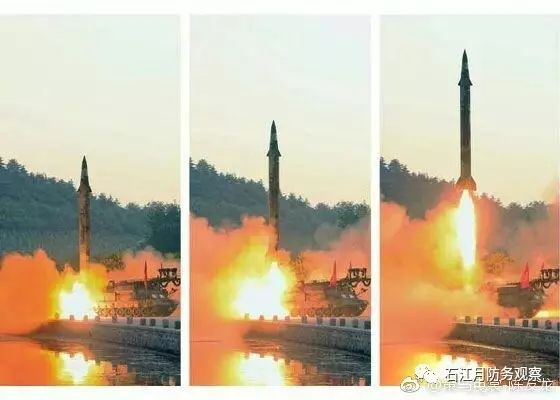
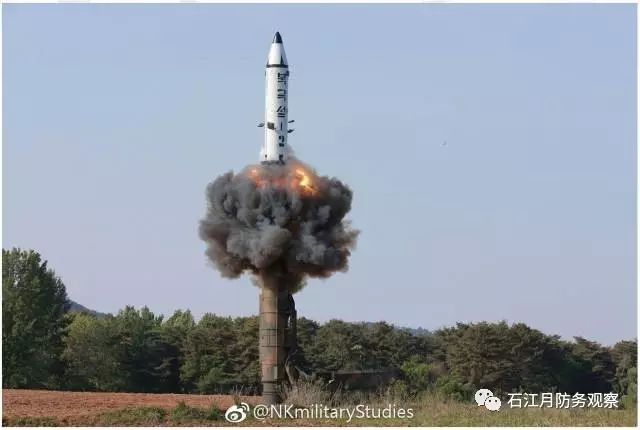
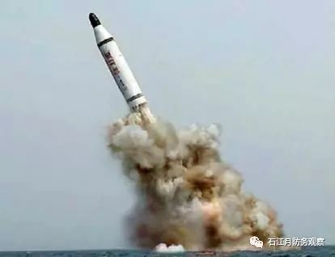
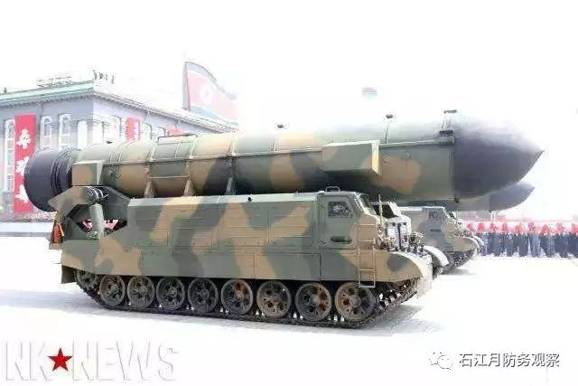
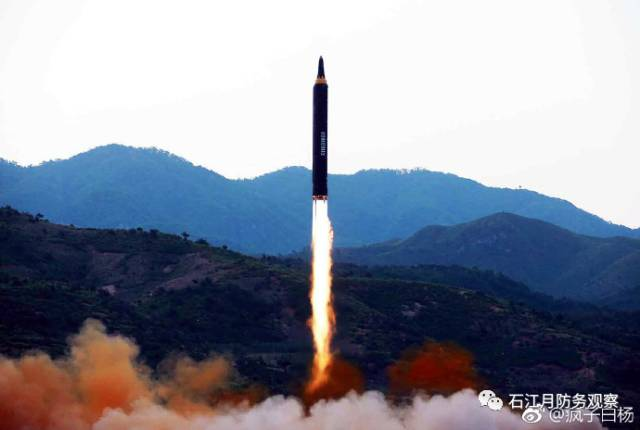
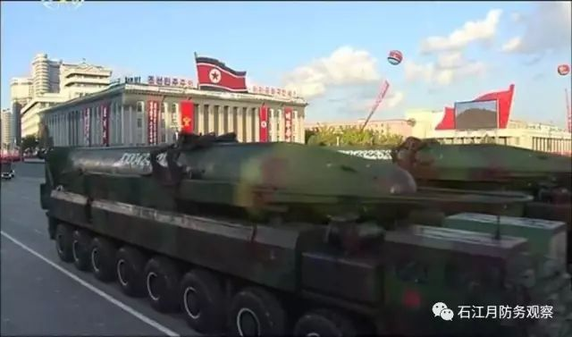
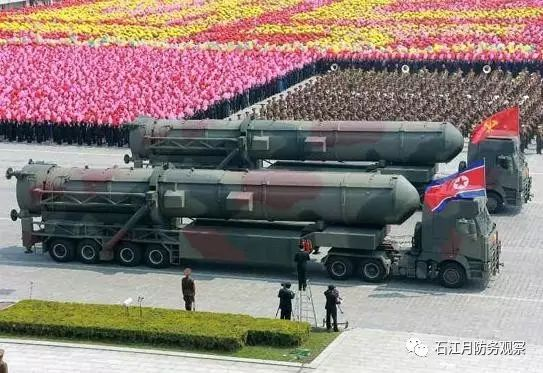
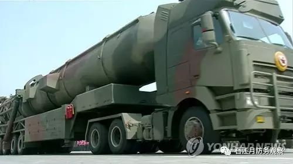
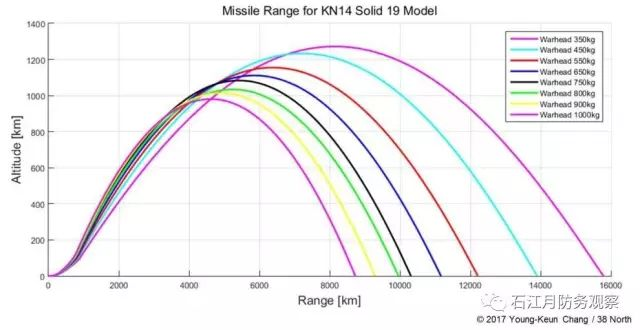

收录于合集
以下文章来源于石江月防务观察 ，作者石江月
 石江月防务观察 .
石江月防务观察 .
石江月，国内资深军事评论员。发表军事安全和国际防务文章达数百篇，《航空知识》《国际展望》《现代舰船》《坦克装甲车辆》及《环球时报》等国内多家媒体都有刊登和转载。2013年8月，台“防长”杨念祖因抄袭本人译文遭揭发，最终下课。
5月29日凌晨，朝鲜再次发射一枚弹道导弹。一天之后，朝鲜官方称这是新型“火星-9”导弹，搭载精密制导系统，而且试射获得成功。这已经是平壤最近两周来，第三次试射弹道导弹，而且这三次都获得了成功。

也就在一周前，朝鲜最高领导人金正恩宣布，批准“北极星-2”中程弹道导弹实战部署。这对于美国来说绝不是个好消息。不久前，一位美国情报高官警告说，朝鲜正在发展直接对美国实施核打击的能力。
在这种背景下，特朗普亮出了决心：“朝鲜核导威胁一定会解决”。
两个航母的决心
七国集团（G7）峰会刚刚在意大利举行，在与日本首相安倍晋三会谈时，关于朝鲜持续进行核导开发，美国总统特朗普说，“这个问题总有一天一定会解决”，现在需要对朝施加压力而并非对话。
目前，朝核问题进入僵持阶段。朝鲜连续试射导弹，最近三次都获得成功。而且，朝鲜领导人金正恩宣布“北极星-2”中程弹道导弹可以正式批量生产并部署。皮球如今被踢到美国人脚下，美国该怎么办？是与朝鲜进行谈判，还是继续施压，进而展开军事威慑？
在美日两国首脑的会谈中，特朗普和安倍就日美韩三国携手，并与所有国家合作以实现朝鲜无核化达成共识。两人还一致表示，中国发挥的作用很重要。美日首脑考虑限制向朝鲜出口石油等，打算要求中国采取进一步的措施。显然，美日是想进一步将中国推在前面，逼迫朝鲜放弃核导开发。
由于朝鲜最近连续两次试射中远程弹道导弹，而且都获得成功，美国方面显然也有些坐不住了。美国国会迅速邀请军情部门高官，评估朝鲜弹道导弹发展的水平到底到了何种地步。

美国国防情报局局长文森特·斯图尔特23日在参议院军事委员会的听证会上说，尽管有不足，但朝鲜不断从近年来的导弹试射和核试验中学到东西。如果让朝鲜继续走下去，他们最终将成功地制造出威胁到美国本土的核导弹。
斯图尔特说， “几乎无法预测”朝鲜什么时候会有能力直接攻击美国。但是，他承认，“按照目前的路径走下去，这个能力是不可避免的”。
美国国家情报总监丹·科茨也认为，随着朝鲜的导弹和核能力不断增强，朝鲜对美国国家安全构成日益严重的威胁。
特朗普说朝鲜核导威胁一定会解决，信心来自哪里？这句话只是空话吗？也许不一定。当朝鲜方面宣布“北极星-2”弹道导弹进入部署阶段后，美国方面越来越意识到朝鲜距离拥有洲际弹道导弹越来越近了。
因此，在已经向朝鲜半岛部署两个航母群后，美国又向西太平洋派遣一个航母群。“尼米兹”号核动力航母将于6月1日离开美西部华盛顿州的海军基地，目前西太平洋已有航母“卡尔･文森”和“罗纳德･里根”两个航母打击群活动。
有分析认为派出第3个航母群是为了威慑反复发射弹道导弹的朝鲜，这是非常重要的一环。在西太平洋同时派遣3艘航母十分罕见。尽管，此举可能是为遏制朝鲜实施第六次核试验及进一步发射导弹等挑衅行为，但美国加强军事压力，必将激起朝鲜的反弹。美朝间的紧张关系可能进一步加剧。
当然，美军相关人士透露，还有一种可能是，“尼米兹”号接替据称正在朝鲜半岛附近活动的“卡尔･文森”号。“尼米兹”号在西太平洋的派遣期间为6个月，该航母的发言人表示根据世界局势的变化也有可能调整。以“尼米兹”号为主的第11航母打击群由4艘导弹驱逐舰、1艘导弹巡洋舰等构成。
即便美军在“尼米兹”号航母前往西太平洋是接替“卡尔·文森”号航母，可以看出，保持两个航母战斗群在西太- 朝鲜半岛海域，仍旧显示出华盛顿希望对朝鲜摆出强大的军事威慑姿态。
导弹之路的转折
5月22日，朝鲜最高领导人金正恩宣布，朝军再次成功试射“北极星-2”型地对地中远程战略弹道导弹（IRBM），并批准在部队实战部署该导弹。21日试射的目的，在于最终测评“北极星-2”型武器体系的各项技术指标，检验该武器体系能否在不同环境中正常运行，进而决定是否将其实战部署。

北极星- 2
通过此次试射，朝鲜军方全面验证履带式发射车的冷发射系统、制导和稳定化系统、各级分离系统、大功率固体发动机等各系统运行可靠精准。此外，通过远程测评资料再次确认，在弹头分离后的中段和末段的各项技术指标达标，根据安装在弹头上的摄像头拍摄的视频，姿态控制系统也运行到位。
在对发射结果进行分析和评估后说，朝鲜领导人认为该导弹无可挑剔，导弹的打击精准度极高，是非常成功的战略武器。“北极星-2”正式批准进入实战部署，也是朝鲜弹道导弹发展的标志性改变。
2月12日，在“舞水端”中程弹道导弹多次失败后，朝鲜发射了一种新型中程弹道导弹，外界这才知道了“北极星-2”。虽然不是一种机动型洲际弹道导弹，但这次试验表明，平壤向着试射一枚固体燃料洲际弹道导弹的目标，取得了比预期更大的进展。
在4月15日“太阳节”的大规模阅兵式上，朝鲜则公布了看起来是其新的固体推进剂洲际弹道导弹，外界假定为“北极星-3”。
“舞水端”中程导弹
整个2016年，朝鲜8次试射采用高能液体燃料的“舞水端”中程导弹，但只有一次成功。这些试验使用了一个更像是射向天空的、高角度的弹道，可能是为了缩短导弹的射程，避免在日本上空飞行引起的任何的紧张升级。
然而，从作战角度来看，高角度弹道发射还可以使再入飞行器( RV)在末段以更快速下降，从而使导弹防御只有更少的拦截时间。似乎这些连续的试验失败暴露了“舞水端”导弹发动机的缺陷，该发动机是由俄罗斯r-27潜射弹道导弹通过逆向工程发展而来的。
2016年6月，朝鲜进行的“舞水端”导弹试射获得一次成功，很可能是为了模拟洲际弹道导弹的再入环境和速度，那一次导弹的射高超过1400公里，比往常的高度更高。

北极星-1
随着“北极星-2”的出现，外界认为朝鲜正在验证新技术，因为“北极星-2”中程弹道导弹展示了一种新型固体燃料剂推进系统。朝鲜官方宣布，这种导弹使用的技术在“北极星-1”潜射弹道导弹上使用过，并声称在短短6个月内创造了“惊人的奇迹”，完成一种新的战略武器系统,。
固体燃料发动机通过减少注入液体推进剂的耗时过程，缩短了发射准备时间，从而降低了被情报、监视和侦察设施及时发现的风险。因此，这些提高了导弹的生存能力，及其从更安全的地点迅速发射的能力，使得美韩“有效先发制人”军事打击面临问题。
与常规液体燃料弹道导弹相比，采用固体推进剂的弹道导弹具有优于前者的其他重要军事行动优势。固体燃料弹道导弹更加安全，易于处理和维护，它们也更加操作简单。与同等尺寸的液体燃料弹道导弹相比，固体燃料弹道导弹具有更大的射程。因此，朝鲜部署一款固体燃料导弹，对美国及美国盟友的威胁要比液体燃料导弹更大。
固体导弹的优势
此外，“北极星-2”导弹展示了一些新的能力：

北极星- 2
第一，“北极星- 2”弹道导弹使用履带式运输、起竖、发射三用车，可以在恶劣的地形提供比轮式三用车更好的机动性。这种新型三用车，根据朝鲜公布的试射照片显示，是基于一个改装后重型坦克底盘，这种底盘由朝鲜设计和建造，但在布局上与苏联SS-14系统相似。
第二 ，“北极星-2”弹道导弹是朝鲜第一种使用道路机动型的冷发射系统弹道导弹，它采用压缩气体的压力，将导弹从地面上树立的发射筒弹出，然后在脱离发射筒的瞬间同时火箭发动机点火。该系统不需要在发射装置内增加排气尾流控制，因此使从密闭空间发射变得可行。
与热发射系统不同，冷发射还降低了在导弹发生故障时损坏或摧毁三用发射车的可能性，因为一旦发射失败也是发生在飞行中，而不是在地面上。去年8月，在进行“北极星-1” 潜射弹道导弹试射时，就展示过这种冷发射技术，该导弹从垂直发射管中成功被发射出去。
第三 ，2017年2月12日以及5月14和5月21日发射的导弹都以高角度发射，保证在预定的射程之内，类似于去年发射的舞水端中程弹道导弹和“北极星-1”潜射弹道导弹。由于“北极星-2”中程弹道导弹以较高的角度发射（几乎达到垂直角度），所以最大射高已经超过1000公里。有一种说法是，似乎朝鲜故意在发射时搭载了一枚较重的弹头，以降低其峰值高度。根据美韩专家的模拟，估计在北极星- 2上装载的弹头重量约为1.6至1.7吨，比以前搭载的弹头重得多。较重的弹头可能带来更高的杀伤力，因为产生的爆炸当量更大。

火星-12
根据美韩方面的评估，“北极星-2”导弹的射程在2500公里左右，另一种“火星-12”弹道导弹的射程在4000公里左右。
据外界推测，在经过20多年的研发后，朝鲜希望能够获得一种采用液体推进剂的洲际弹道导弹，有能力打击美国本土的目标。通过这些年的试验和失败，他们已经为洲际弹道导弹开发出一个大推力的第一级液体火箭发动机，正如在过去一年时间里两次进行的80吨推力“白头山”火箭发动机地面点火试验展示的那样。
虽然确切的发展道路还不清楚，但平壤可能已经决定开发与液体燃料弹道导弹平行的固体燃料弹道导弹。2016年3月，朝鲜进行了一次成功的地面试验，是一枚长度为3米至3.2米、直径约1.3米的固体燃料火箭发动机。5个月后，朝鲜试射了“北极星- 1”两级潜射弹道导弹，采用的也是固体燃料发动机，导弹的长度估计约为9米，直径约为1.35米。
未来朝鲜可能会将其所有液体燃料弹道导弹，都换成采用固体推进剂。首先被替换的，很有可能是“飞毛腿”短程弹道导弹，以及“劳动”型中型弹道导弹。这两种弹道导弹都使用常规的液体燃料发动机，而且外界认为朝鲜已部署了大约800多枚这两种导弹。
考虑到朝鲜的经济问题，更替燃料发动机将逐步进行。“舞水端”中远程弹道导弹将会快速替换，这款导弹也采用高能液体推进剂。 如果“舞水端”仍旧不断遭遇失败，被证明不可靠，北极星-2固体燃料导弹将成为朝鲜中远程弹道导弹的主力。
洲际导弹的方案
随着两种新型固体燃料弹道导弹的研制和成功试验，朝鲜距离获得技术突破越来越近了，而这是“发展出一种有效的公路机动型洲际弹道导弹”的目标所必须的。平壤甚至可能正在研发两种不同类型的，采用固体燃料发动机的公路机动型洲际弹道导弹。

KN-14导弹
一种可能以液体燃料弹道导弹KN-14作为基础，借鉴其构造和尺寸。KN-14在2015年朝鲜举行的阅兵式中展出过，这样可以最大限度地缩短研发时间。另一种可能是全新设计一种洲际弹道导弹，以满足更严格的任务要求。
“北极星-3”的新型固体燃料洲际弹道导弹的作战性能，也是外界分析的重点，基本都是基于外形尺寸与KN-14型导弹近似。根据西方的观察，机动型KN-14型洲际弹道导弹的长度大约为17米，直径在1.9米至2米。


在今年年4月15日平壤举行的“太阳节”大规模阅兵中，朝鲜展示了两种不同类型的“北极星-3”型洲际弹道导弹，两者都以封闭的状态，放置在卡车上的发射管内。虽然新洲际弹道导弹的确切尺寸和大小尚不清楚，但可以通过KN-14的尺寸做出估计。
美国约翰·霍普金斯大学美韩研究所“北纬38度”网站的分析认为，如果朝鲜的大推力火箭发动机能够最终成功，当搭载一枚550公斤弹头时，其射程有可能达12200公里；当弹头为750公斤时，射程为10300公里。这些作战距离可能足以打击美国本土目标。

朝鲜公路机动型洲际弹道导弹的未来演进，是一个难以预测的问题。然而，如果朝鲜成功地进行了固体燃料洲际弹道导弹的试射，并继续提高其可靠性，平壤可能会放弃其液体燃料洲际弹道导弹的方案。
在固体燃料导弹技术领域，朝鲜如何取得如此重要的进展？众所周知，固体燃料火箭在结构上比液体燃料火箭简单得多，但设计的复杂性随其尺寸呈指数增长，研发时需要大量的测试和设计迭代。因此，平壤从事固体燃料技术研究已经十多年是完全可能的，同时开发国产的“舞水端”液体燃料发动机。
还有一种可能是，平壤同时发展固体燃料北极星-2中远程弹道和固体燃料北极星-3洲际弹道导弹。因此，如果朝鲜最初决定同时寻求发展固体燃料和液体燃料洲际弹道导弹，也并非令人惊讶之事。
一些西方防务专家还怀疑，朝鲜加速发展固体燃料火箭与伊朗的导弹计划有着某些联系——更具体地说，朝鲜向伊朗提供液体燃料导弹技术，以换取固体燃料导弹技术。 然而，伊朗在21世纪初才开始研制固体燃料导弹，其两级固体燃料弹道导弹Sejil仍在研制中。简而言之,伊朗尚未掌握这项技术。然而，不能排除两国之间联系的可能，但由于缺乏确凿的证据，难以证实这种说法。
最终，从液体燃料到固体燃料弹道导弹的改变，将标志着朝鲜导弹系统发展的大转移。 一种采用固体火箭发动机，暂时命名为“北极星-3”的公路机动型洲际弹道导弹，可以很容易在射程上达到“未来打击美国本土”的要求,使它成为对美国的一个严重潜在威胁。 （石江月原创）

来源：石江月防务观察
筛选：早安老师
编辑：维君
您可能还会喜欢：